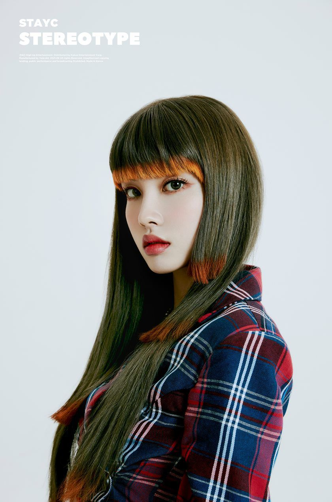
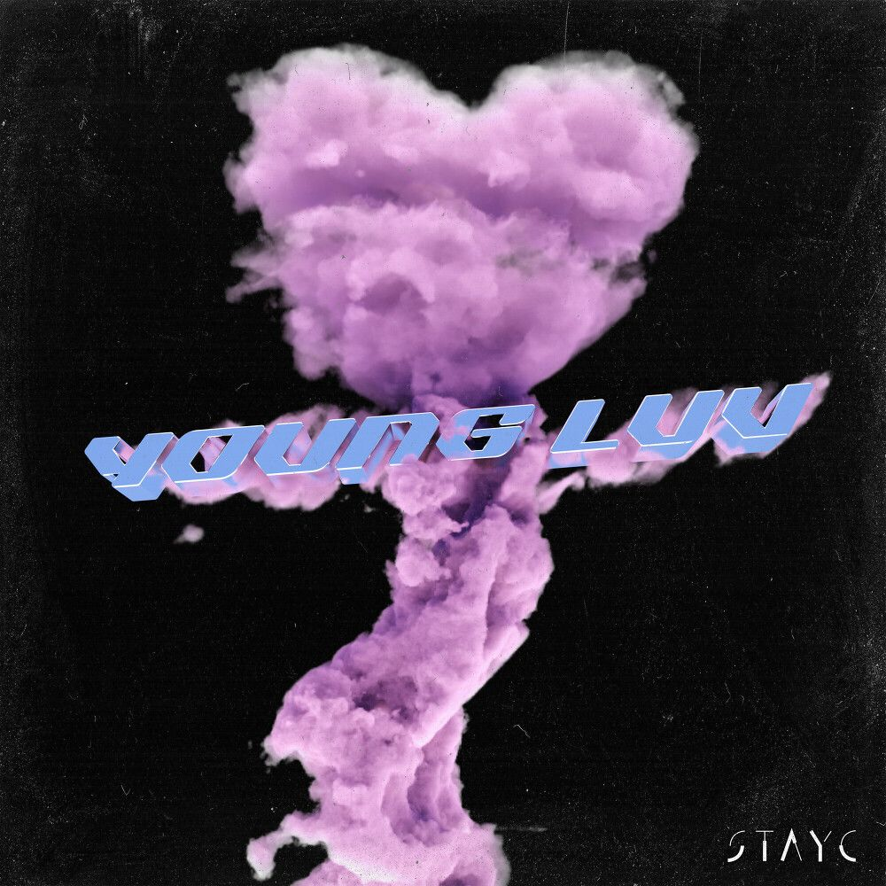
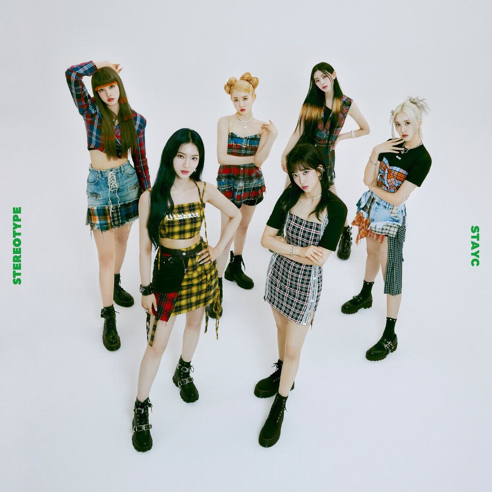
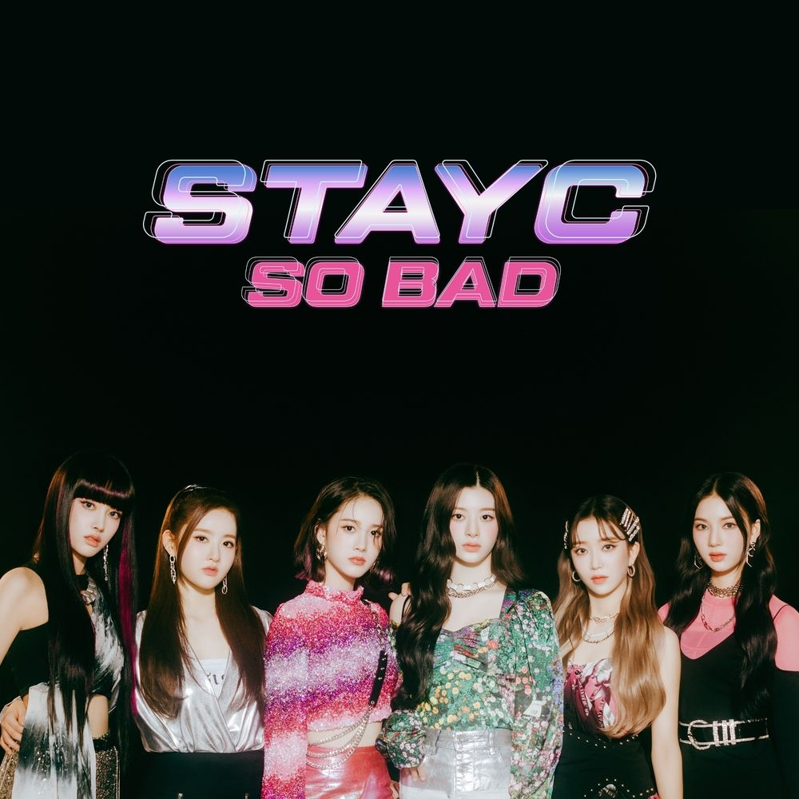

STAYC 스테이씨
STAYC(스테이씨)는 수민, 시은, 아이사, 세은, 윤, 재이로 구성된 대한민국의 6인조 걸그룹이다. 'Star To A Young Culture'의 약자로 젊은 문화를 이끄는 스타가 되겠다는 포부를 담은 그룹은 2020년 11월, 데뷔곡 'SO BAD'로 가요계의 첫 선을 보였다. 풋풋한 틴프레시 매력은 물론 탄탄한 실력과 화려한 비주얼로 많은 관심을 얻었고, 발매와 동시에 음원 차트 상위권 진입과 뮤직비디오 조회수 1000만뷰를 돌파하며 특급 신인다운 저력을 입증했다. 이듬해 첫번째 미니앨범 [STEREOTYPE]를 출시, 타이틀곡 '색안경(STEREOTYPE)'을 통해 몽환적인 이미지에서부터 펑키한 이미지까지 다채로운 모습을 선보이며 활발한 활동을 펼쳤다.
STAYC is a 6-member South Korean girl group consisting of SUMIN, SIEUN, ISA, SEEUN, YOON, and J. An abbreviation of 'Star To A Young Culture', the group with aspirations to become stars who lead young culture made their debut in the music industry with their debut song 'SO BAD' in November 2020. Not only did he attract a lot of attention with his youthful charm, but also his strong skills and gorgeous visuals, and upon release, he entered the top of the music charts and surpassed 10 million views in music videos, proving the potential of a super rookie. The following year, the first mini-album [STEREOTYPE] was released, and through the title song 'STEREOTYPE', he showed a variety of images from dreamy images to funky images and was active.


-

SUMIN
리더, 서브보컬, 리드래퍼수민
-

SIEUN
메인보컬시은
-
ISA
리드보컬아이사
-

SEEUN
서브보컬세은
-

YOON
리드보컬윤
-

J
서브보컬, 메인래퍼재이
-

YOUNG-LUV.COM
숨 쉴 틈 없이 휘몰아치는 ‘RUN2U’, STAYC(스테이씨)만의 독보적 틴프레시의 귀환!
전 세계가 주목하는 STAYC의 새 앨범, The 2nd Mini Album ‘YOUNG-LUV.COM’ 전격 발매 ‘ASAP’과 ‘색안경’을 연이어 히트시키며 ‘4세대 대표 아이돌 그룹’으로 자리매김한 STAYC는 지난 해 2021 브랜드 고객충성도 대상 신인 여자 아이돌 부문 수상을 시작으로 2021 멜론 뮤직 어워드, 제36회 골든디스크 어워즈 등 국내 유수 시상식에서 10관왕 수상을 하며 명실상부 ‘4세대 아이돌 그룹’으로 인정받았다. 또한 국내뿐만 아니라 해외에서도 많은 인정을 받고 있으며 글로벌 음악 플랫폼 애플뮤직과 뮤직 디스커버리 앱 샤잠이 함께 선정한 ‘2022년 주목해야 할 5팀의 아티스트’에 한국 아티스트로는 유일하게 이름을 올리기도 하였다.
이렇게 ‘ASAP’과 ‘색안경’으로 중독성 강한 노래와 퍼포먼스를 선보이며 많은 사랑을 받은 STAYC가 사랑에 빠진 저돌적인 모습으로 우리 곁에 돌아왔다. 타이틀곡 ‘RUN2U’는 남들이 뭐래도 사랑을 위해서라면 두려움 없이 너를 향해 달려가겠다는 마음을 STAYC만의 느낌으로 거침없이 표현한 곡이다. ‘상관없어 멋대로 생각해도 돼 막지 못해 널 사랑하기 때문에’라는 가사에서도 알 수 있듯이 남의 시선은 상관하지 않은 채 나의 온전한 감정을 에너지 넘치고 당당한 모습으로 표현한 점이 특징이다.
이번 앨범도 STAYC를 위해 역대급 작가진이 뭉쳤다. 하이업 대표 프로듀서인 블랙아이드필승을 필두로 히트메이커 전군, BXN 그리고 신예 프로듀서 FLYT, will.b 등 새로운 작가진들이 크레딧에 이름을 올렸다. 타이틀곡인 ‘RUN2U’를 포함하여 이번 미니2집 ‘YOUNG-LUV.COM’은 총 6트랙으로 이루어져 있으며 폭넓고 다양한 음악을 담고 있다. STAYC가 탄생시킨 독보적 장르인 ‘틴프레시(TEENFRESH)’가 앞으로 어떻게 확장될지 귀추가 주목된 가운데 2022년의 새로운 STAYC의 모습을 기대해 본다.The return of 'RUN2U', which churns without a breath, and STAYC's unique teen fresh!
STAYC's new album, The 2nd Mini Album 'YOUNG-LUV.COM', which is attracting attention from the world Starting with the Brand Customer Loyalty Grand Prize in the new female idol category, they won 10 crowns at domestic prestigious awards such as the 2021 Melon Music Awards and the 36th Golden Disc Awards, and were recognized as a '4th generation idol group' in name and reality. In addition, it has been recognized not only in Korea but also abroad, and was the only Korean artist to be named in the '5 Teams to Watch in 2022' selected by Apple Music, a global music platform, and Shazam, a music discovery app.
STAYC, who received a lot of love for their highly addictive songs and performances with ‘ASAP’ and ‘Sterotype’, came back to us with a bold look that fell in love. The title song 'RUN2U' is a song that freely expresses STAYC's unique feeling of running towards you without fear if it is for love, no matter what others say. As the lyrics of ‘It doesn’t matter, you can think whatever you want, I can’t stop you because I love you’, it is characterized by expressing my full emotions in a confident and energetic way without worrying about other people’s gaze.
For this album too, the best writers of all time have come together for STAYC. Hi-Up's leading producer, Black Eyed Pilseung, and hit maker Jeon Gun, BXN, and up-and-coming producers FLYT and will. The 2nd mini album 'YOUNG-LUV.COM', including the title song 'RUN2U', consists of a total of 6 tracks and contains a wide variety of music. While attention is being paid to how 'TEENFRESH', a unique genre created by STAYC, will expand in the future, we look forward to seeing the new STAYC in 2022. -

STEREOTYPE
STAYC(스테이씨)만의 특별한 시그니처 장르, 더 강력해진 ‘틴프레시(TEENFRESH)’로 돌아온 STAYC의 첫번째 미니 앨범 [STEREOTYPE] 9월 6일 발매!
‘실력과 비주얼 모두 갖춘 아이돌’ 이젠 STAYC의 수식어가 되었다. ‘전원센터, 보컬, 퍼포머’라는 입소문을 타며 핫한 존재감으로 4세대 대표 걸그룹으로 자리매김한 STAYC는 전작 싱글 2집 ‘STAYDOM’의 ‘ASAP(에이셉)’으로 데뷔 이래 자체 최고 기록을 달성하며 호평 속에 활동을 마무리했다. 데뷔앨범 ‘Star To A Young Culture’로 초동 1만장을 돌파, 그 해 데뷔한 걸그룹 중 1위를 차지하며 위력을 입증하였고 두 번째 앨범 ‘STAYDOM’에서는 초동 3만5천장을 돌파하여 전작의 배를 훨씬 뛰어 넘는 판매고를 올려 위력을 다시 한번 더 보여주었다. ‘STAYDOM’ 발매 직후 타이틀곡 ‘ASAP’의 국내 음원차트 상위권 차트인은 물론 ‘ASAP’의 꾹꾹이 춤이 소셜 및 포털에서 큰 화제가 되어 대중적으로도 ‘ASAP’ 인지도가 높아져 많은 사랑을 받았다. 또한 미국 그래미 선정 ‘떠오르는 한국 아티스트 5’, 미국 타임지 선정 ‘2021년 현재 최고의 K-POP’에 이름을 올리는 등 글로벌 인기도 괄목할 만한 성장을 보여주었다. 또한 국내외 시장에서 화장품, 헤드폰, 콘택트렌즈 등 전속 광고모델로도 선정되며 데뷔 1년이 채 되지 않은 신인임에도 끝없는 광고계의 러브콜이 이어지고 있다. 이렇게 국내외 많은 리스너들의 사랑 속에 한층 더 성장된 모습을 보여준 STAYC가 새 앨범 ‘STEREOTYPE’을 들고 우리 곁으로 다시 돌아왔다.
보이는 것이 다가 아니다!
이번 앨범은 STAYC의 첫번째 미니앨범으로 총 4곡이 수록되어 있으며 앨범을 관통하는 큰 주제는 ‘STEREOTYPE’이다. 타이틀곡 ‘색안경(STEREOTYPE)’은 STAYC만의 특별한 시그니처인 ‘틴프레시(TEENFRESH)’라는 장르를 바탕으로 STAYC만의 하이틴과 우아함을 담은 곡이다. 사람들이 단순히 겉모습만을 보고 쉽게 남을 판단하려는 편견과 고정관념에서 벗어나고자 하는 메시지를 ‘색안경을 끼고 보지 마요’ 라는 가사에 담았다. 고정관념 속 우리의 색을 한가지로만 단정 짓지 말고 우리에겐 다양한 색깔과 본질이 있다는 것을 ‘색안경(STEREOTYPE)’을 통해 많은 이들에게 알리고자 한다. ‘색안경(STEREOTYPE)’을 통해 몽환적인 이미지에서부터 펑키한 이미지까지 다채로운 모습의 STAYC도 확인할 수 있어 큰 기대감을 모은다.
하이업엔터테인먼트 대표 프로듀서 블랙아이드필승과, 전군의 전곡 프로듀싱으로 다양한 분위기의 STAYC 음악을 느낄 수 있으며 각 곡마다 펼쳐지는 STAYC의 폭넓은 음악적 스펙트럼에 앞으로의 성장이 더 기대되는 아티스트로 떠오르고 있다.STAYC's first mini-album [STEREOTYPE] will be released on September 6th, with STAYC's unique signature genre, a stronger 'TEENFRESH'!
‘Idol with both skills and visuals’ has now become the modifier of STAYC. STAYC, which has established itself as a representative girl group of the 4th generation with a hot presence through word of mouth of 'power center, vocals, performers', achieved its own best record since their debut with 'ASAP' from their 2nd single 'STAYDOM'. The activity ended in favorable reviews. Their debut album 'Star To A Young Culture' sold 10,000 copies in the first week, proving their power by taking first place among the girl groups that debuted that year. It showed its power once again by raising sales that far exceeded the Immediately after the release of 'STAYDOM', the title song 'ASAP' not only entered the charts at the top of the domestic music charts, but also 'ASAP''s Kkukki dance became a big topic on social and portal sites, and the public's awareness of 'ASAP' increased and received a lot of love. In addition, he was selected as an exclusive advertising model for cosmetics, headphones, and contact lenses in domestic and overseas markets, and despite being a rookie who debuted less than a year ago, love calls from the advertising industry are continuing. STAYC, who showed a more mature image in the love of many domestic and foreign listeners, came back to us with the new album ‘STEREOTYPE’.
Seeing is not everything!
This album is STAYC's first mini-album and contains a total of 4 songs, and the big theme that runs through the album is 'STEREOTYPE'. The title song 'STEREOTYPE' is a song that contains STAYC's unique teen and elegance based on the genre called 'TEENFRESH', which is STAYC's special signature. In the lyrics, 'Don't look with sunglasses', people want to break free from the prejudices and stereotypes that people easily judge others by simply looking at their appearance. We want to let many people know that we have a variety of colors and essences through ‘stereotype’, rather than judging our colors in stereotypes. Through ‘Sunglasses (STEREOTYPE)’, you can check out STAYC in various forms, from dreamy images to funky images, raising high expectations.
With Hi-Up Entertainment's representative producer Black Eyed Pilseung and the production of all songs by the whole army, you can feel STAYC's music in a variety of moods. -
STAYDOM
STAYC(스테이씨) 2nd Single Album ‘STAYDOM’
2020년 다양한 성과를 이뤄낸 최고의 대형 신인 “STAYC”가 새로운 앨범 ‘STAYDOM’으로 2021년 여정의 포문을 열었다.
‘전원 센터’, ‘전원 비주얼’ 이라는 수식어가 어울리는 ‘STAYC’는 눈에 띄는 외모뿐만 아니라 출중한 실력으로 이미 여러 매체를 통해 검증했고, 이번 ‘STAYDOM’을 통해 자유로움 안에서 STAYC만의 ‘하이틴’과 ‘키치함’을 바탕으로 더 강력해진 ‘틴프레시’를 선보일 예정이다.
이번 ‘STAYDOM’에는 STAYC의 데뷔곡 SO BAD를 새롭게 리믹스 한 ‘SO BAD (TAK REMIX)’를 비롯하여 Synth Bass, Woodwind Synth의 캐치한 라인과 시원시원한 리듬악기가 어우러진 타이틀곡 ‘ASAP’과 세련되고 감각적인 멜로디에 청량하고 에너지 넘치는 ‘SO WHAT’, STAYC의 감각적 보컬을 느낄 수 있는 Contemporary R&B곡 ‘사랑은 원래 이렇게 아픈 건가요’ 를 포함 총 4곡의 음악이 수록되어 있다. 이번 앨범으로 한층 더 성장하고 다채로워진 색깔의 STAYC를 만나 볼 수 있다.STAYC 2nd Single Album ‘STAYDOM’
The biggest rookie of 2020, “STAYC”, who achieved various achievements in 2020, opened the door to their journey in 2021 with their new album ‘STAYDOM’.
'STAYC', which suits the modifiers 'power center' and 'power visual', has already been verified through various media for its outstanding appearance as well as outstanding skills, and through this 'STAYDOM', STAYC's unique 'teen' and Based on 'Kitchen', we plan to introduce a more powerful 'Teen Fresh'.
This 'STAYDOM' includes 'SO BAD (TAK REMIX)', a new remix of STAYC's debut song SO BAD, as well as the title song 'ASAP', which combines the catchy lines of Synth Bass and Woodwind Synth and cool rhythm instruments, along with sophisticated and sensual music. It contains a total of 4 songs including 'SO WHAT', a refreshing and energetic in-melody, and a contemporary R&B song, 'Is Love Is This So Painful', where you can feel STAYC's sensual vocals. With this album, you can meet STAYC, which has grown more and more colorful. -

Star To A Young Culture
STAYC(스테이씨) 1st Single Album “Star To A Young Culture”
걸그룹 트와이스, 에이핑크, 청하, 씨스타 등의 수많은 히트곡을 만든 히트 메이커 “블랙아이드필승”의 10년간의 노하우와 색깔이 100% 담긴 6인조 신인 걸그룹 “STAYC(스테이씨)” 전격 데뷔!!!
“블랙아이드필승”이 설립한 High Up Entertainment에서 3년간의 혹독하고 까다로운 트레이닝을 통과한 6인조 신인 걸그룹 “STAYC(스테이씨)”가 드디어 데뷔한다.
STAYC(스테이씨)는 수민, 시은, 아이사, 세은, 윤, 재이 등 6명 전원 한국 멤버로 이루어진 평균연령 18세의 6인조 걸그룹이다. STAYC(스테이씨)는 ‘Star To A Young Culture’의 약자로 젊은 문화를 이끄는 스타가 되겠다는 당찬 포부를 담고 있다. 데뷔 전 연습 과정에서부터 바른 인성과 건강한 마인드를 강조하여 대중들이 믿고 사랑할 수 있도록 “Healthy”를 키워드로 인큐베이팅 되었다. 전 멤버가 뛰어난 외모와 뛰어난 실력을 겸비하고 있어 전원센터, 전원보컬이라는 수식어도 가지고 있다.
STAYC(스테이씨)의 데뷔곡 “SO BAD”는 STAYC(스테이씨) 특유의 “틴프레시”함으로 기존 걸그룹들과는 확실히 다른 새로운 컨셉의 시작을 알린다. “틴프레시”하게 신선한 멤버들의 외모와 음악은 대중들에게 지금껏 경험하지 못한 차원의 음악을 제공, 새로운 K-POP의 본보기가 될 것이며 NEW K-POP 시장의 시작을 알릴 것이다.
타이틀곡 “SO BAD”는 서툰 사랑의 시작이지만 자신의 마음을 숨김 없이 말하는 10대의 당당함을 표현한 곡으로 “블랙아이드필승X전군”과 “STAYC(스테이씨)” 멤버들의 시너지를 확인할 수 있으며 STAYC(스테이씨)의 매력적인 퍼포먼스를 감상할 수 있어 기대를 한껏 모은다.STAYC 1st Single Album “Star To A Young Culture”
A six-member rookie girl group with 10 years of know-how and color 100% of the hit maker “Black Eyed Pilseung”, who made numerous hit songs such as Twice, Apink, Chungha, and Sistar. “STAYC” makes a sudden debut!!!
After 3 years of rigorous and demanding training at High Up Entertainment, founded by “Black Eyed Pilseung,” the new 6-member girl group “STAYC” finally debuted.
STAYC is a six-member girl group with an average age of 18, consisting of all six Korean members: SUMIN, SIEUN, ISA, SEEUN, YOON, and J. STAYC is an abbreviation of 'Star To A Young Culture' and contains a bold ambition to become a star who leads young culture. From the pre-debut practice process, the keyword “Healthy” was incubated so that the public could trust and love them by emphasizing a good personality and a healthy mind. All members have excellent looks and excellent skills, so they have the modifiers of power center and all vocals.
STAYC's debut song "SO BAD" signals the start of a new concept that is definitely different from existing girl groups with STAYC's unique "teen fresh". The “teen fresh” members’ appearance and music will provide the public with music that has never been experienced before, serving as an example of a new K-Pop and heralding the beginning of the NEW K-Pop market.
The title song “SO BAD” is the beginning of a clumsy love, but it is a song that expresses the dignity of a teenager who speaks his mind without hiding. You can see the synergy of the “STAYC” members and enjoy the attractive performances of STAYC, raising expectations.